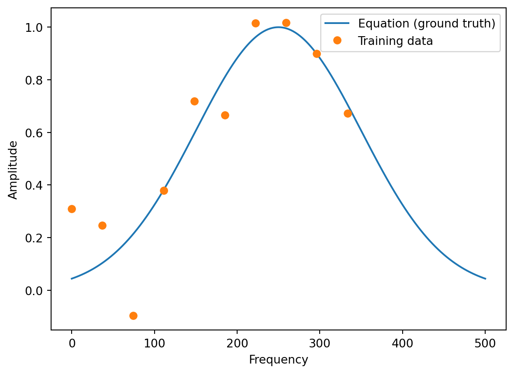

import torch
import numpy as np
import torch.nn as nn
import torch.optim as optim
import torch.utils.data as thdat
import functools
import matplotlib.pyplot as plt
import seaborn as sns
# boundaries for the frequency range
a = 0
b = 500
def ode(frequency, loc, sigma, R):
"""Computes the amplitude. Defining equation, used
to generate data and train models.
The equation itself is not known to the model.
Args:
frequency: (N,) array-like
loc: float
sigma: float
R: float
Returns:
(N,) array-like
Examples:
>>> ode(0, 25, 100, 0.005)
100.0
"""
A = np.exp(-R * (frequency - loc)**2/sigma**2)
return A29 Hyperparameter Tuning with PyTorch Lightning: Physics Informed Neural Networks
In this section, we will show how to set up PINN hyperparameter tuner from scratch based on the spotpython programs from Chapter 28.
29.1 The Ground Truth Model
Definition of the (unknown) differential equation:
Setting the parameters for the ode
np.random.seed(10)
loc = 250
sigma = 100
R = 0.5- Generating the data
frequencies = np.linspace(a, b, 1000)
eq = functools.partial(ode, loc=loc, sigma=sigma, R=R)
amplitudes = eq(frequencies)- Now we have the ground truth for the full frequency range and can take a look at the first 10 values:
df = pd.DataFrame({'Frequency': frequencies[:10], 'Amplitude': amplitudes[:10]})
print(df) Frequency Amplitude
0 0.000000 0.043937
1 0.500501 0.044490
2 1.001001 0.045048
3 1.501502 0.045612
4 2.002002 0.046183
5 2.502503 0.046759
6 3.003003 0.047341
7 3.503504 0.047929
8 4.004004 0.048524
9 4.504505 0.049124- We generate the training data as a subset of the full frequency range and add some noise:
# Make training data
t = np.linspace(a, 2*b/3, 10)
A = eq(t) + 0.2 * np.random.randn(10)- Plot of the training data and the ground truth:
plt.plot(frequencies, amplitudes)
plt.plot(t, A, 'o')
plt.legend(['Equation (ground truth)', 'Training data'])
plt.ylabel('Amplitude')
plt.xlabel('Frequency')Text(0.5, 0, 'Frequency')
29.2 Required Files
We use the files from the /userModel directory as templates. They are renamed as follows:
my_regressor.py\(\Rightarrow\)pinn_regressor.py, see Section 29.2.2my_hyperdict.json\(\Rightarrow\)pinn_hyperdict.py, see Section 29.2.3my_hyperdict.py\(\Rightarrow\)pinn_hyperdict.py, see Section 29.2.1.
29.2.1 The New pinn_hyperdict.py File
Modifying the pin_hyperdict.py file is very easy. We simply have to change the classname MyHyperDict to PINNHyperDict and the filename from "my_hyper_dict.json" to "pinn_hyper_dict.json". The file is shown below.
import json
from spotpython.data import base
import pathlib
class PINNHyperDict(base.FileConfig):
def __init__(
self,
filename: str = "pinn_hyper_dict.json",
directory: None = None,
) -> None:
super().__init__(filename=filename, directory=directory)
self.filename = filename
self.directory = directory
self.hyper_dict = self.load()
@property
def path(self):
if self.directory:
return pathlib.Path(self.directory).joinpath(self.filename)
return pathlib.Path(__file__).parent.joinpath(self.filename)
def load(self) -> dict:
with open(self.path, "r") as f:
d = json.load(f)
return d29.2.2 The New pinn_regressor.py File
Warning
The document is not complete. The code below is a template and needs to be modified to work with the PINN model.
import lightning as L
import torch
from torch import nn
from spotpython.hyperparameters.optimizer import optimizer_handler
import torchmetrics.functional.regression
class PINNRegressor(L.LightningModule):
"""
A LightningModule class for a regression neural network model.
Attributes:
l1 (int):
The number of neurons in the first hidden layer.
epochs (int):
The number of epochs to train the model for.
batch_size (int):
The batch size to use during training.
initialization (str):
The initialization method to use for the weights.
act_fn (nn.Module):
The activation function to use in the hidden layers.
optimizer (str):
The optimizer to use during training.
dropout_prob (float):
The probability of dropping out a neuron during training.
lr_mult (float):
The learning rate multiplier for the optimizer.
patience (int):
The number of epochs to wait before early stopping.
_L_in (int):
The number of input features.
_L_out (int):
The number of output classes.
_torchmetric (str):
The metric to use for the loss function. If `None`,
then "mean_squared_error" is used.
layers (nn.Sequential):
The neural network model.
"""
def __init__(
self,
l1: int,
epochs: int,
batch_size: int,
initialization: str,
act_fn: nn.Module,
optimizer: str,
dropout_prob: float,
lr_mult: float,
patience: int,
_L_in: int,
_L_out: int,
_torchmetric: str,
):
"""
Initializes the MyRegressor object.
Args:
l1 (int):
The number of neurons in the first hidden layer.
epochs (int):
The number of epochs to train the model for.
batch_size (int):
The batch size to use during training.
initialization (str):
The initialization method to use for the weights.
act_fn (nn.Module):
The activation function to use in the hidden layers.
optimizer (str):
The optimizer to use during training.
dropout_prob (float):
The probability of dropping out a neuron during training.
lr_mult (float):
The learning rate multiplier for the optimizer.
patience (int):
The number of epochs to wait before early stopping.
_L_in (int):
The number of input features. Not a hyperparameter, but needed to create the network.
_L_out (int):
The number of output classes. Not a hyperparameter, but needed to create the network.
_torchmetric (str):
The metric to use for the loss function. If `None`,
then "mean_squared_error" is used.
Returns:
(NoneType): None
Raises:
ValueError: If l1 is less than 4.
"""
super().__init__()
# Attribute 'act_fn' is an instance of `nn.Module` and is already saved during
# checkpointing. It is recommended to ignore them
# using `self.save_hyperparameters(ignore=['act_fn'])`
# self.save_hyperparameters(ignore=["act_fn"])
#
self._L_in = _L_in
self._L_out = _L_out
if _torchmetric is None:
_torchmetric = "mean_squared_error"
self._torchmetric = _torchmetric
self.metric = getattr(torchmetrics.functional.regression, _torchmetric)
# _L_in and _L_out are not hyperparameters, but are needed to create the network
# _torchmetric is not a hyperparameter, but is needed to calculate the loss
self.save_hyperparameters(ignore=["_L_in", "_L_out", "_torchmetric"])
# set dummy input array for Tensorboard Graphs
# set log_graph=True in Trainer to see the graph (in traintest.py)
self.example_input_array = torch.zeros((batch_size, self._L_in))
if self.hparams.l1 < 4:
raise ValueError("l1 must be at least 4")
hidden_sizes = self._get_hidden_sizes()
# Create the network based on the specified hidden sizes
layers = []
layer_sizes = [self._L_in] + hidden_sizes
layer_size_last = layer_sizes[0]
for layer_size in layer_sizes[1:]:
layers += [
nn.Linear(layer_size_last, layer_size),
self.hparams.act_fn,
nn.Dropout(self.hparams.dropout_prob),
]
layer_size_last = layer_size
layers += [nn.Linear(layer_sizes[-1], self._L_out)]
# nn.Sequential summarizes a list of modules into a single module, applying them in sequence
self.layers = nn.Sequential(*layers)
def _generate_div2_list(self, n, n_min) -> list:
"""
Generate a list of numbers from n to n_min (inclusive) by dividing n by 2
until the result is less than n_min.
This function starts with n and keeps dividing it by 2 until n_min is reached.
The number of times each value is added to the list is determined by n // current.
No more than 4 repeats of the same value (`max_repeats` below) are added to the list.
Args:
n (int): The number to start with.
n_min (int): The minimum number to stop at.
Returns:
list: A list of numbers from n to n_min (inclusive).
Examples:
_generate_div2_list(10, 1)
[10, 5, 5, 2, 2, 2, 2, 2, 1, 1, 1, 1, 1, 1, 1, 1, 1, 1]
_ generate_div2_list(10, 2)
[10, 5, 5, 2, 2, 2, 2, 2]
"""
result = []
current = n
repeats = 1
max_repeats = 4
while current >= n_min:
result.extend([current] * min(repeats, max_repeats))
current = current // 2
repeats = repeats + 1
return result
def _get_hidden_sizes(self):
"""
Generate the hidden layer sizes for the network.
Returns:
list: A list of hidden layer sizes.
"""
n_low = self._L_in // 4
n_high = max(self.hparams.l1, 2 * n_low)
hidden_sizes = self._generate_div2_list(n_high, n_low)
return hidden_sizes
def forward(self, x: torch.Tensor) -> torch.Tensor:
"""
Performs a forward pass through the model.
Args:
x (torch.Tensor): A tensor containing a batch of input data.
Returns:
torch.Tensor: A tensor containing the output of the model.
"""
x = self.layers(x)
return x
def _calculate_loss(self, batch):
"""
Calculate the loss for the given batch.
Args:
batch (tuple): A tuple containing a batch of input data and labels.
Returns:
torch.Tensor: A tensor containing the loss for this batch.
"""
x, y = batch
y = y.view(len(y), 1)
y_hat = self(x)
loss = self.metric(y_hat, y)
return loss
def training_step(self, batch: tuple) -> torch.Tensor:
"""
Performs a single training step.
Args:
batch (tuple): A tuple containing a batch of input data and labels.
Returns:
torch.Tensor: A tensor containing the loss for this batch.
"""
val_loss = self._calculate_loss(batch)
# self.log("train_loss", val_loss, on_step=True, on_epoch=True, prog_bar=True)
# self.log("train_mae_loss", mae_loss, on_step=True, on_epoch=True, prog_bar=True)
return val_loss
def validation_step(self, batch: tuple, batch_idx: int, prog_bar: bool = False) -> torch.Tensor:
"""
Performs a single validation step.
Args:
batch (tuple): A tuple containing a batch of input data and labels.
batch_idx (int): The index of the current batch.
prog_bar (bool, optional): Whether to display the progress bar. Defaults to False.
Returns:
torch.Tensor: A tensor containing the loss for this batch.
"""
val_loss = self._calculate_loss(batch)
# self.log("val_loss", val_loss, on_step=False, on_epoch=True, prog_bar=prog_bar)
self.log("val_loss", val_loss, prog_bar=prog_bar)
self.log("hp_metric", val_loss, prog_bar=prog_bar)
return val_loss
def test_step(self, batch: tuple, batch_idx: int, prog_bar: bool = False) -> torch.Tensor:
"""
Performs a single test step.
Args:
batch (tuple): A tuple containing a batch of input data and labels.
batch_idx (int): The index of the current batch.
prog_bar (bool, optional): Whether to display the progress bar. Defaults to False.
Returns:
torch.Tensor: A tensor containing the loss for this batch.
"""
val_loss = self._calculate_loss(batch)
self.log("val_loss", val_loss, prog_bar=prog_bar)
self.log("hp_metric", val_loss, prog_bar=prog_bar)
return val_loss
def predict_step(self, batch: tuple, batch_idx: int, prog_bar: bool = False) -> torch.Tensor:
"""
Performs a single prediction step.
Args:
batch (tuple): A tuple containing a batch of input data and labels.
batch_idx (int): The index of the current batch.
prog_bar (bool, optional): Whether to display the progress bar. Defaults to False.
Returns:
A tuple containing the input data, the true labels, and the predicted values.
"""
x, y = batch
yhat = self(x)
y = y.view(len(y), 1)
yhat = yhat.view(len(yhat), 1)
print(f"Predict step x: {x}")
print(f"Predict step y: {y}")
print(f"Predict step y_hat: {yhat}")
# pred_loss = F.mse_loss(y_hat, y)
# pred loss not registered
# self.log("pred_loss", pred_loss, prog_bar=prog_bar)
# self.log("hp_metric", pred_loss, prog_bar=prog_bar)
# MisconfigurationException: You are trying to `self.log()`
# but the loop's result collection is not registered yet.
# This is most likely because you are trying to log in a `predict` hook, but it doesn't support logging.
# If you want to manually log, please consider using `self.log_dict({'pred_loss': pred_loss})` instead.
return (x, y, yhat)
def configure_optimizers(self) -> torch.optim.Optimizer:
"""
Configures the optimizer for the model.
Notes:
The default Lightning way is to define an optimizer as
`optimizer = torch.optim.Adam(self.parameters(), lr=self.learning_rate)`.
spotpython uses an optimizer handler to create the optimizer, which
adapts the learning rate according to the lr_mult hyperparameter as
well as other hyperparameters. See `spotpython.hyperparameters.optimizer.py` for details.
Returns:
torch.optim.Optimizer: The optimizer to use during training.
"""
# optimizer = torch.optim.Adam(self.parameters(), lr=self.learning_rate)
optimizer = optimizer_handler(
optimizer_name=self.hparams.optimizer, params=self.parameters(), lr_mult=self.hparams.lr_mult
)
return optimizer